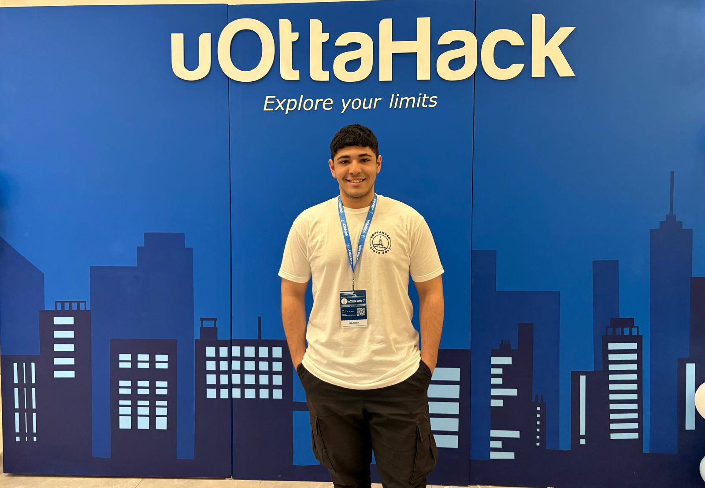

Passionné par la conception d'interfaces centrées sur l'usager. J'apprends à créer des expériences numériques qui ont du sens, à l'Université d'Ottawa

Salut ! Je m'appelle Omar Almoghly, étudiant en deuxième année en génie logiciel à l'Université d'Ottawa. Ce portfolio reflet mon parcours créatif durant le semestre.
Dans mon parcours d'étude, j'ai pris plusieurs cours qui m'ont permis de développer mes compétences, en applicant plusieurs projets individuels et en équipe dans les domaines de la programmation. Ces expériences m'ont donné une solide base technique et une compréhension approfondie des processus de développement logiciel.
J’aime apprendre de nouvelles compétences et relever des défis, et je suis impatient de partager mes progrès à travers ce portfolio.
Mon processus de conception s'appuie sur les principes fondamentaux du design UI/UX enseignés dans le cours SEG3525 et par le Nielsen Norman Group. Chaque décision visuelle est réfléchie.
Actuellement inscrit au cours SEG3525 - Conception et analyse des interfaces usagers - j'explore les fondements du design UI/UX : HTML, CSS, Bootstrap, et les principes de communication visuelle.
Je m'appuie sur les ressources de référence comme le Nielsen Norman Group (NN/g) pour comprendre comment concevoir des expériences qui répondent aux besoins réels des utilisateurs.
Chaque conception fait l'objet d'une réflexion critique : choix de couleurs, typographie, hiérarchie visuelle. Je documente mes décisions pour progresser et itérer.
Quatre designs seront réalisés au cours du semestre. Les pages ci-dessous sont des espaces réservés - cliquez pour découvrir ce qui est à venir.
Conception d'un site vitrine pour fournisser de services. Concentre sur la clarté et la confiance.
Un jeu de mémoire entièrement jouable dans le navigateur. Interface interactive et dynamique.
Interface e-commerce avec catalogue, panier et flux d'achat. Une prise en main facile et sûre.
Visualisation de données de sport ou finances. Graphiques interactifs et lecture claire.
Une question, n'hésitez pas à me contacter !
Oalmo045@uottawa.ca